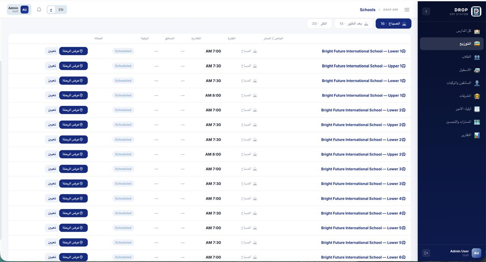
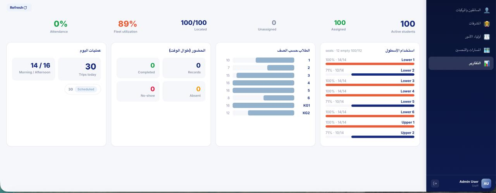
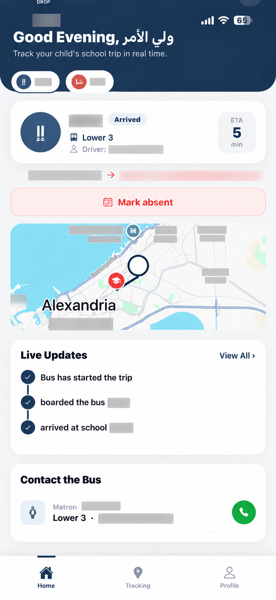
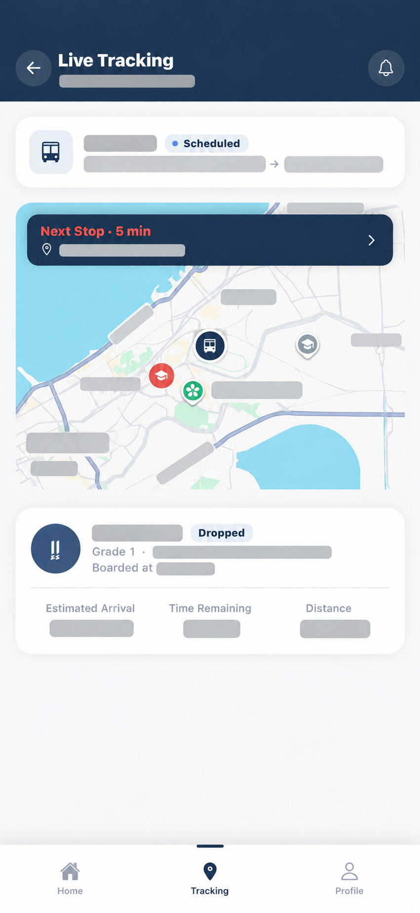

خطوة بخطوة
من أول ركوب لحد آخر نزول.
دروب بيربط تجهيز المدرسة للخطوط بمتابعة فريق الباص وتحديثات أولياء الأمور خلال اليوم الدراسي.

المدرسة بتجهّز الرحلة
فريق النقل يضيف الخطوط والمواقف والطلاب ويحدد الباص والجدول لكل رحلة.

المشرف بيتابع الركوب
فريق الباص يشوف قائمة الطلاب ويسجل حالة الركوب أو الغياب أو الانتظار أثناء الرحلة.
الأهالي بيتابعوا التحديثات
ولي الأمر يقدر يشوف الباص المخصص وتحديثات الرحلة ويبلغ عن غياب الطالب من التطبيق.

جوا دروب
من مكتب المدرسة لحد بابها.
المدرسة تتابع التشغيل من المنصة، والأهالي يشوفوا تحديثات الرحلة في التطبيق.

الرحلات اليومية في مكان واحد
شاشة الرحلات بتجمع الخطوط والمواعيد وحالة كل رحلة لفريق المدرسة.

التقارير بصورة أوضح
ملخصات التشغيل تساعد الفريق يراجع نشاط النقل المدرسي.
تطبيق المدارس
الرحلة قدام ولي الأمر.
شاشة ولي الأمر تعرض الباص المخصص وتحديثات الرحلة، وشاشة التتبع تعرض المسار وحالة الوصول.


صور الموبايل مبنية على لقطات من التطبيق، مع تعديلها لإخفاء بيانات الأطفال والتواصل والأماكن الدقيقة.
أسئلة سريعة
دروب للمدارس إيه؟
منصة برمجية تساعد المدرسة وفريق الباص وأولياء الأمور على تنظيم ومتابعة رحلات النقل المدرسي.
مين بيستخدم المنصة؟
فريق النقل بالمدرسة، فريق الباص، وأولياء الأمور، وكل طرف يشوف المعلومات المناسبة لدوره.
إزاي أطلب عرض توضيحي؟
افتح صفحة التواصل واكتب بيانات المدرسة، واضغط ابعت الطلب. هنرد عليك بالبريد الإلكتروني.
دروب للمدارس
خلّي رحلات مدرستك مترابطة.
احكيلنا عن نظام النقل في مدرستك ونتكلم عن إزاي دروب ممكن يساعدك.